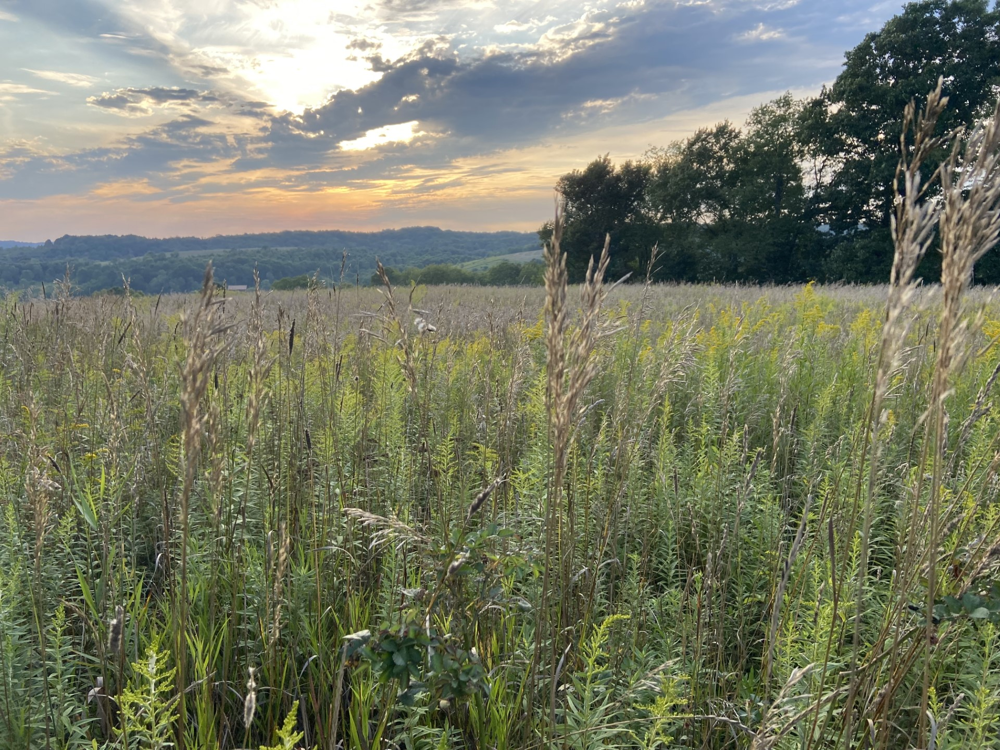
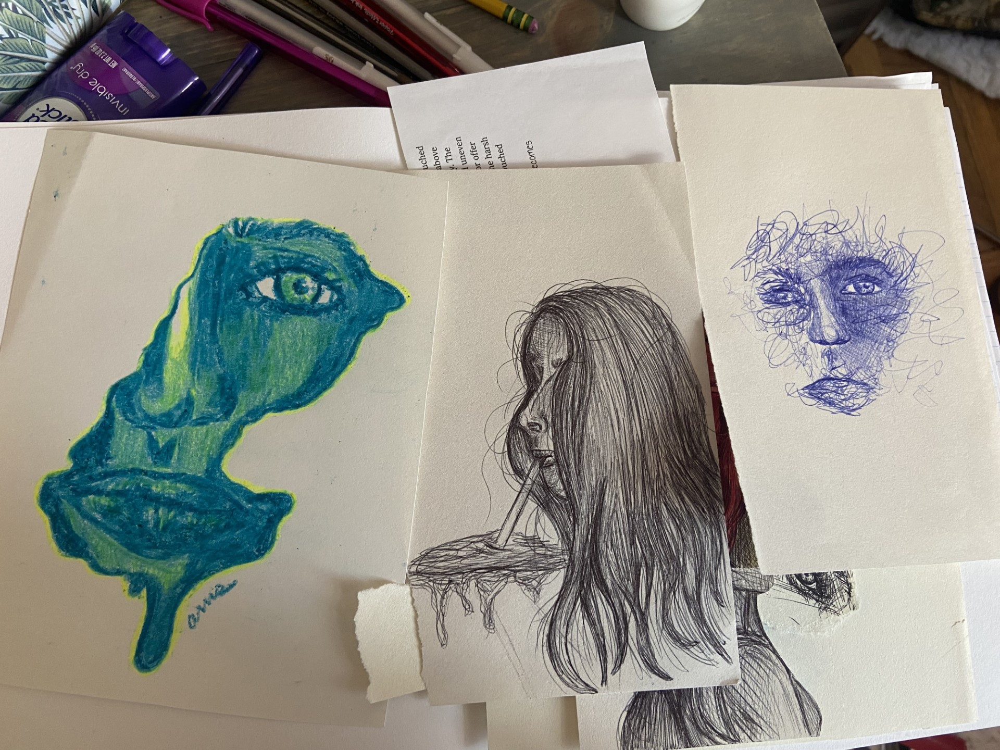
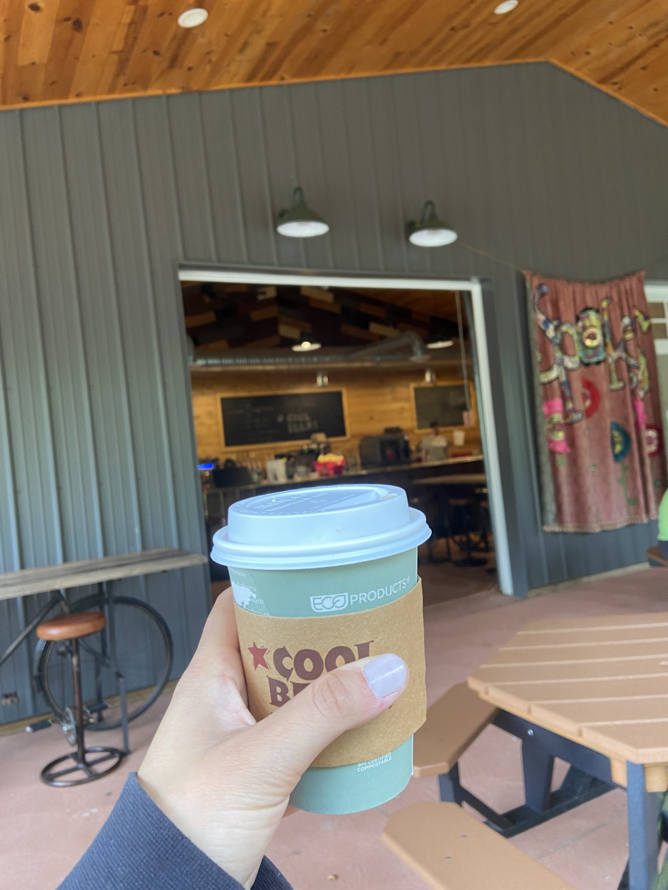
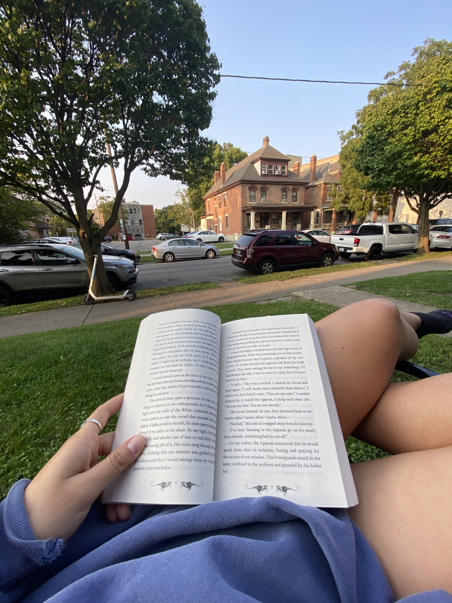

"I praise you, for I am fearfully and wonderfully made. Wonderful are you works; my soul knows it very well" (Psalm 139:14).
 
If I were to ruminate on how I was created, I would acknowledge how big my heart is.
I would speak of how I love to love and how I think the small things are really the big things.
I would explain how being creative is the avenue in which I best experience this world and how
the sky makes me happy.
I would talk about how I love to read the way other people think and I would attempt to put into words
the way music makes me feel.
I am a compilation of intricacies the Lord designed specially for me, and because of that, the way
in which I am made is wonderful.
